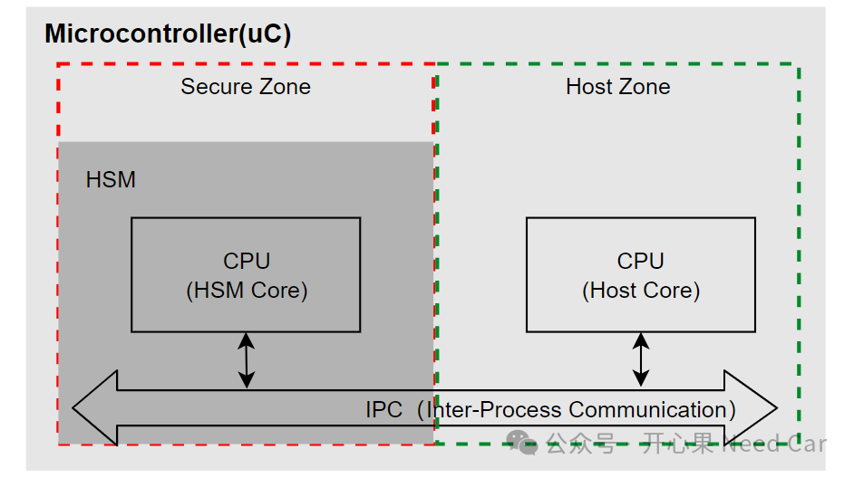
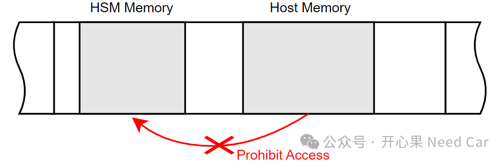
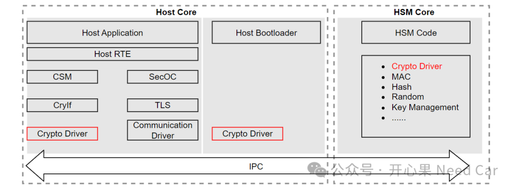
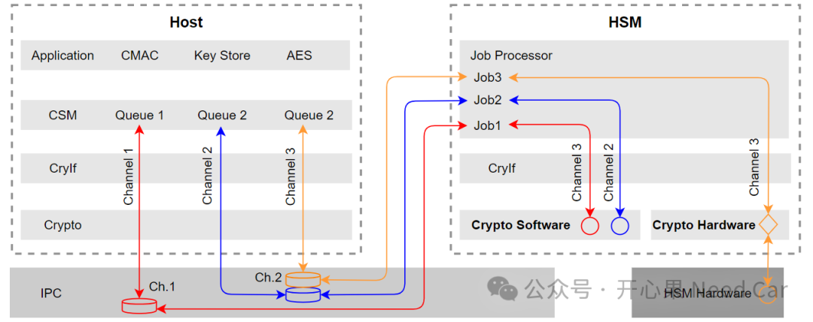

信息安全学习目录网络安全（Cybersecurity），入门一下
开心果 Need Car · 2024-09-09T06:32:00+08:00 · 微信原文
不得不承认，如今的车辆软件架构中，网络安全（Cybersecurity）已然是一个不可忽视的议题。因此，汽车行业的小伙伴，有必要了解一下网络安全以及它的软件架构。本文，主要聊一聊HSM（Hardware Security Module）和Host，让大家对MCU内的软件划分有一个认识。讨论信息安全，主要讨论密钥管理、证书管理（certificate management）、加密服务等。首先，我们需要清楚什么是Host，什么又是Hsm。在一块芯片中(eg：TC387)，会有一块独立的安全区（secure zone），这个独立的安全区可以提供安全信息存储、加密/解密服务等功能。而Secure Zone之外的区域，习惯称为Host Zone，示意如下所示：

Secure Zone中的CPU，习惯称为HSM Core，Host Zone中的CPU，习惯称为Host Core。因此，HSM和Host之间的通信，一般属于多核（multi-core communication），由于HSM Core和Host Core在一块芯片上，所以，两者之间的通信称之为IPC（Inter-Process Communication，核间通信/进程间通信）通信。对于Host Core和HSM Core，在一些芯片中（eg：TC387），两者的内核架构不同，Host Core主要是Tricore架构，HSM Core是ARM架构，即：两者属于异构核。对于TC4xx芯片，HSM Core和Host Core均使用Tricore架构，属于同构内核。为什么可以理解为进程间通信呢？答：因为HSM Project和Host Project对应不同的main()函数，所以，我们将main()看作一个进程，不同的main()之间的通信也就看作进程间通信了。
提示：有些芯片，没有独立的HSM Core（eg：RH850 C1MA2），只有一些算法的硬件加速外设（eg:AES、TRND等）。
我们知道，软件的开发中，会根据控制器的功能要求设置不同的功能安全目标，当然，这需要遵循ISO26262规范。那么，信息安全软件需要符合功能安全目标吗？或者需要达到怎样的功能安全等级？目前来看，信息安全软件的功能安全等级为QM，并没有ASIL等级要求。既然HSM程序所在区属于Secure Zone，那么，也就意味着HSM程序内存不能被Application访问。所以，在设计时，往往会将HSM对应的Code和Data设置成独占区，只有HSM可以访问，禁止Host访问，即：物理区间隔离。示意如下：
所以，一般会将关键的信息安全参数（eg：密钥、电池信息、动力信息、气囊信息等）存储在HSM独有的内存区，eg：HSM独有的DFlash区域。注意：对于存储在HSM端的密钥，Host端可以更新和使用，但是，Host端不能直接获取密钥明文。项目开始之初，我们会根据芯片内存空间进行Memory Layout划分，至少会划分出3个进程：Application、Bootloader以及HSM，示意如下：

如果进一步拆分HSM，HSM可以拆分出HSM Bootloader和HSM Application。对于HSM进程，简单理解就是为Host进程提供信息安全服务，包括：密钥存储、证书管理、对称及非对称算法服务、真随机数等。其中，对于算法服务，需要结合芯片讨论，有些芯片具有对应算法的硬件加速器，则可以使用硬件实现，而有些算法服务，硬件不支持，则只能由软件实现。示意如下：
对于信息安全的软件开发来说，主要围绕Crypto Driver。即：HSM主要实现Crypto Driver功能，Host通过对应服务接口获取HSM服务。HSM和Host通过进程间通信（IPC）获取服务及响应服务状态。所以，如果Bootloader是“祖传手写代码”或者自行设计的软件代码，个人观点：使用Crypto Driver就足够，根据项目实际启用对应的算法即可。没必要将整个信息安全服务栈移植。
点击下方关注，一起聊聊Autosar/嵌入式，如果需要，联系作者进群，给你更专业的解答